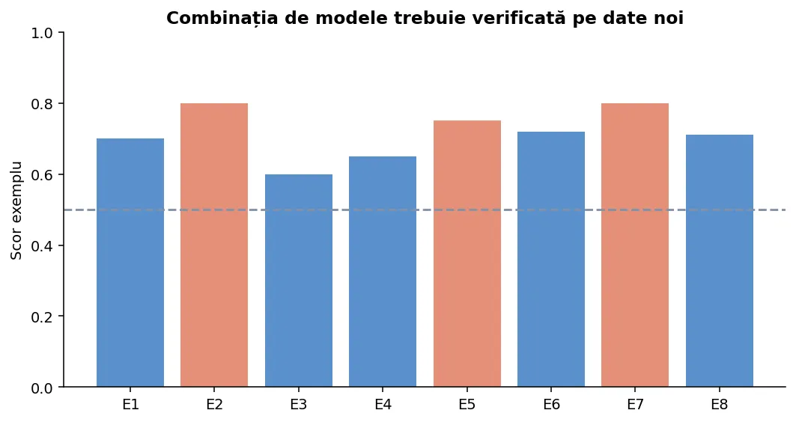
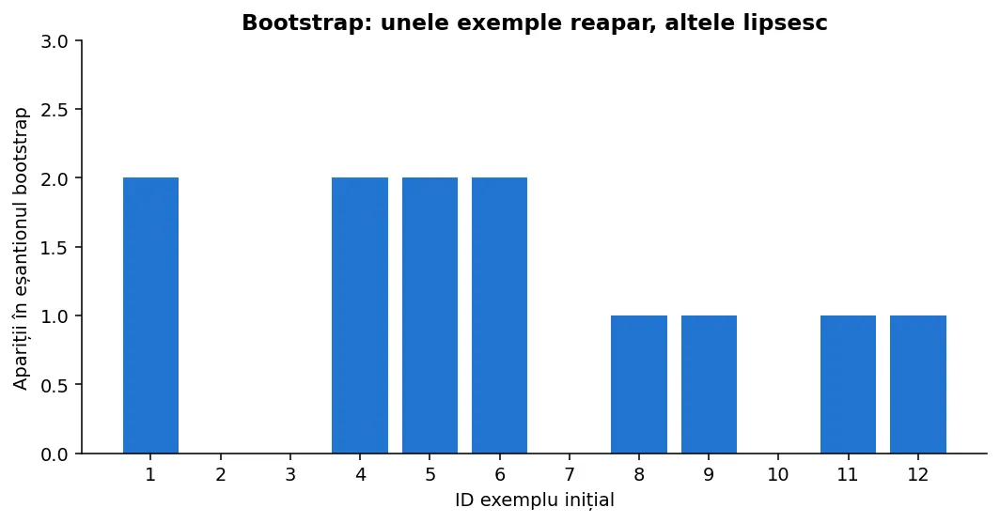
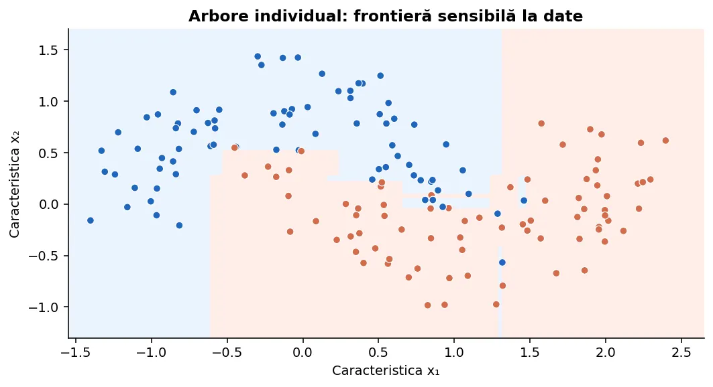
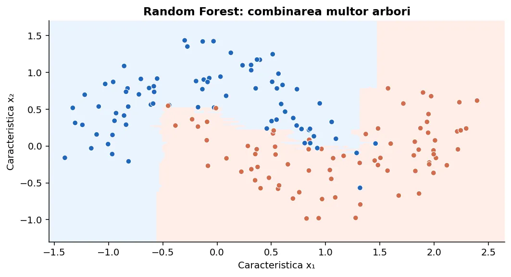
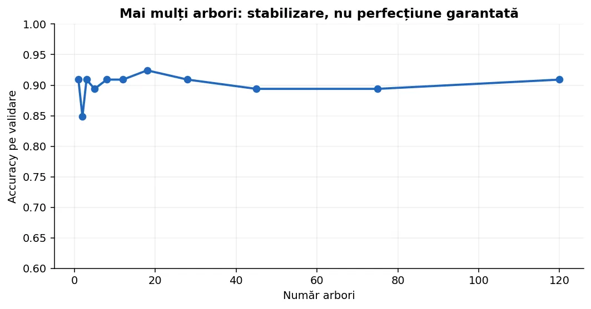
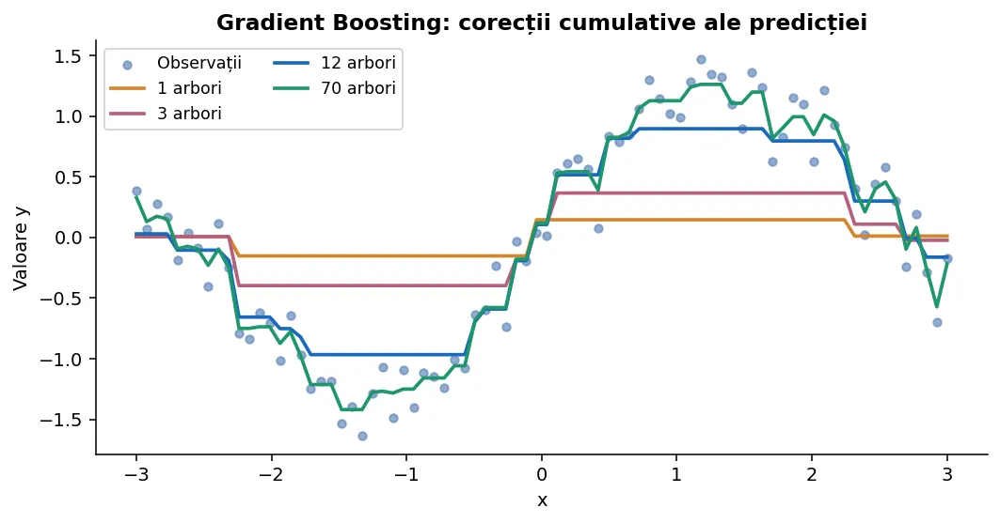
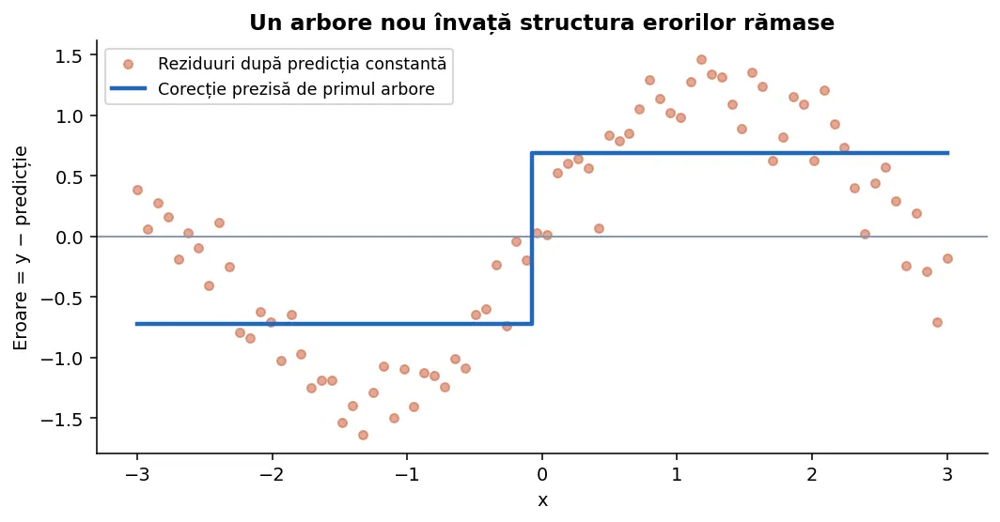
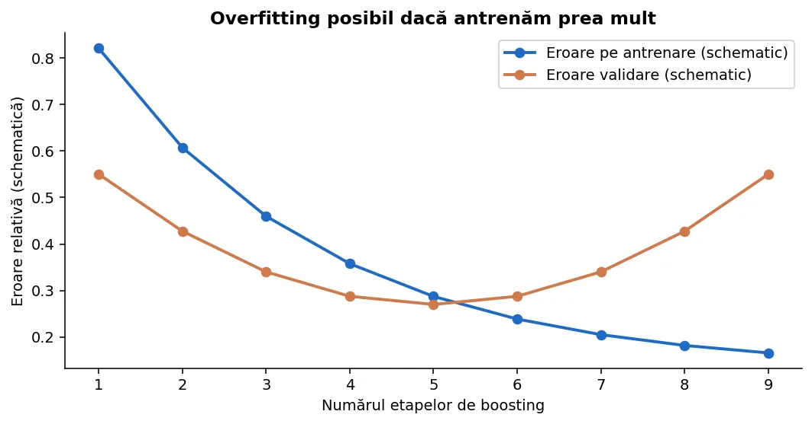
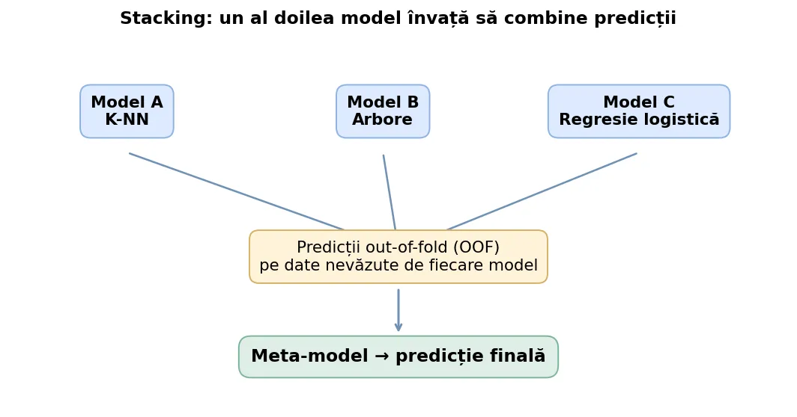

Înțelegem algoritmii prin calcule, desene și exemple. Urmărim fiecare eșantion bootstrap, votul arborilor, corecțiile boostingului și predicțiile out-of-fold. La final știm să implementăm ideile de bază și să folosim corect sklearn.ensemble.
Să presupunem că cinci elevi analizează aceeași fotografie și aleg o categorie. Unul poate greși din cauza zgomotului, însă dacă deciziile sunt suficient de diferite și cele mai multe sunt corecte, rezultatul combinat poate fi mai stabil. Un ansamblu (ensemble) face ceva asemănător cu modelele de machine learning: combină predicțiile mai multor estimatori.
Nu este suficient să antrenăm de cinci ori exact același model, pe aceleași date și cu aceleași setări, dacă toate cele cinci copii greșesc identic. Ansamblurile sunt utile când modelele individuale au erori care nu coincid perfect.
Pentru clasificare, estimatoarele pot furniza etichete (de exemplu „pisică” sau „câine”) sau probabilități. Pentru regresie, estimatoarele furnizează valori numerice: prețuri, temperaturi, scoruri.
| Problemă | Predicțiile a trei modele | Regulă de combinare | Rezultat |
|---|---|---|---|
| Clasificare | A, B, A | vot majoritar | A |
| Regresie | 18, 22, 20 | media aritmetică | 20 |
| Clasificare probabilistică | 0,7; 0,4; 0,8 | media probabilităților | 0,633 pentru clasa 1 |
Hard voting numără etichetele prezise. Soft voting face media probabilităților estimate pentru fiecare clasă și alege clasa cu media cea mai mare. În regresie putem face media predicțiilor, eventual cu ponderi diferite.
predictii_clasificare = [1, 0, 1, 1, 0] voturi_pentru_1 = sum(predictii_clasificare) rezultat = int(voturi_pentru_1 > len(predictii_clasificare) / 2) print(rezultat) predictii_regresie = [17, 22, 18] print(sum(predictii_regresie) / len(predictii_regresie))
1 19.0

Un arbore adânc poate învăța foarte bine setul de antrenare, dar se poate schimba mult dacă înlocuim câteva exemple. Spunem că are varianță ridicată. Combinând arbori diferiți, media poate reduce această variabilitate, dar numai în măsura în care greșelile arborilor nu sunt foarte corelate.
Un model mult prea simplu poate avea bias ridicat: nu surprinde relațiile esențiale, oricâte predicții identice am media. Boosting încearcă să construiască un predictor mai puternic prin adăugarea de corecții.
| Metodă | Cum antrenăm | Cum combinăm | Idee centrală |
|---|---|---|---|
| Voting / Averaging | Modele independente | Vot / medie | Combinăm estimatori existenți |
| Bagging | Pe eșantioane bootstrap | Vot / medie | Reducerea varianței |
| Random Forest | Bootstrap + aleatorizare caracteristici | Media probabilităților / valorilor | Arbori diversificați |
| Boosting | Secvențial | Sumă de corecții / vot ponderat | Corectăm greșelile |
| Stacking | Modele bază + meta-model | Predicție a meta-modelului | Învățăm combinarea |
În general, bagging și Random Forest sunt asociate învățării în paralel, în timp ce boosting se construiește secvențial. Stacking necesită atenție specială la împărțirea datelor.
Avem 8 exemple numerotate E1…E8. Pentru un arbore extragem de 8 ori un ID cu revenire: după ce l-am extras, el rămâne disponibil și poate apărea din nou. Un eșantion posibil este [E3, E1, E3, E7, E5, E1, E8, E8]. Unele exemple se repetă, altele lipsesc.
Construim un alt eșantion pentru fiecare arbore. Astfel, chiar dacă algoritmul de bază este același, datele văzute diferă, deci arborii pot fi diferiți.

import random random.seed(7) exemple = ['E1', 'E2', 'E3', 'E4', 'E5'] bootstrap = [] for _ in range(len(exemple)): pozitie = random.randrange(len(exemple)) bootstrap.append(exemple[pozitie]) print(bootstrap)
Aproximativ 36,8% dintre exemple rămân, în medie, în afara eșantionului unui anumit arbore când n este mare. Acestea sunt exemplele out-of-bag pentru arborele respectiv.
Bagging înseamnă Bootstrap Aggregating. Pregătim B eșantioane bootstrap. Pe fiecare antrenăm un arbore independent. Pentru un exemplu nou, cerem fiecărui arbore o predicție și le combinăm.
Arborii pot avea dimensiuni și întrebări diferite pentru că au văzut exemple diferite. Totuși, dacă există o caracteristică dominantă, arborii pot alege foarte des aceeași întrebare și greșelile vor rămâne corelate.
import random def invata_prag(exemple): # exemple = lista de perechi (x, eticheta 0/1) valori = sorted(set(x for x, y in exemple)) praguri = [(a + b) / 2 for a, b in zip(valori, valori[1:])] cel_mai_bun = (float('inf'), 0.0, 0, 0) for prag in praguri: st = [y for x, y in exemple if x <= prag] dr = [y for x, y in exemple if x > prag] et_st = int(sum(st) * 2 > len(st)) et_dr = int(sum(dr) * 2 > len(dr)) erori = sum(y != (et_st if x <= prag else et_dr) for x, y in exemple) if erori < cel_mai_bun[0]: cel_mai_bun = (erori, prag, et_st, et_dr) return cel_mai_bun[1:] exemple = [(1, 0), (2, 0), (3, 1), (4, 1), (5, 1)] random.seed(2) modele = [] for _ in range(7): esantion = random.choices(exemple, k=len(exemple)) modele.append(invata_prag(esantion)) def predictie(model, x): prag, st, dr = model return st if x <= prag else dr voturi = [predictie(model, 3.2) for model in modele] print(voturi, int(sum(voturi) > len(voturi) / 2))
Modelul de bază este un arbore cu o singură împărțire (decision stump). Este o implementare didactică simplificată: nu reproduce toate detaliile clasei BaggingClassifier.
Pentru fiecare exemplu E, căutăm doar arborii pentru care E nu a fost prezent în eșantionul bootstrap. Calculăm predicția combinată a acestora și o comparăm cu eticheta reală. Repetăm pentru exemplele care au suficiente predicții OOB.
OOB este o estimare internă utilă, dar nu înlocuiește complet un set de test separat. Cu puțini arbori, un exemplu poate avea prea puține predicții OOB. Într-o competiție, nu alege zeci de configurații folosind exclusiv același scor public și apoi să-l consideri estimare finală neutră.
Random Forest (pădure aleatoare) introduce o sursă suplimentară de diversitate: la fiecare nod al unui arbore, se caută cea mai bună împărțire numai între un subset de caracteristici alese aleator. În plus, de obicei antrenează arbori pe eșantioane bootstrap.
Dacă avem 12 caracteristici, arborele poate analiza, la un anumit nod, numai 3 dintre ele; la următorul nod subsetul poate fi altul. Astfel, o caracteristică foarte puternică nu monopolizează fiecare nod din fiecare arbore.


RandomForestClassifier.predict alege clasa cu probabilitatea medie cea mai mare, nu neapărat majoritatea simplă a etichetelor returnate de fiecare arbore.n_estimators, de exemplu 100.max_depth, min_samples_leaf etc.În simulator poți vedea separat ID-urile extrase, caracteristica aleasă de fiecare arbore și pragul de împărțire. Pentru a rămâne ușor de urmărit, arborii simulați au doar un nivel; cei din scikit-learn pot fi mult mai adânci.
from sklearn.ensemble import RandomForestClassifier from sklearn.datasets import load_iris from sklearn.model_selection import train_test_split from sklearn.metrics import accuracy_score X, y = load_iris(return_X_y=True) X_train, X_test, y_train, y_test = train_test_split( X, y, test_size=0.25, random_state=42, stratify=y ) model = RandomForestClassifier( n_estimators=100, max_features='sqrt', min_samples_leaf=2, random_state=42, n_jobs=-1 ) model.fit(X_train, y_train) pred = model.predict(X_test) print(f'Accuracy: {accuracy_score(y_test, pred):.3f}') print('Probabilități:', model.predict_proba(X_test[:1]))
| Parametru | Ce controlează | Când merită modificat |
|---|---|---|
n_estimators | Numărul de arbori | Mai mulți pentru stabilizare, cu timp mai mare |
max_features | Caracteristici candidate per nod | Diversitatea arborilor |
max_depth | Limita adâncimii | Protecție împotriva modelelor foarte complexe |
min_samples_leaf | Minim exemple în frunză | Predicții mai puțin sensibile la zgomot |
bootstrap | Eșantionare cu revenire | Necesara pentru OOB în implementarea obișnuită |
oob_score | Calculează estimare OOB | Analiză internă pentru bootstrap |
class_weight | Costuri diferite per clasă | Dezechilibru de clase |
random_state | Reproductibilitate | Experiment repetabil |
n_jobs | Paralelizare | −1 folosește procesoarele disponibile |

Fiecare arbore de regresie prezice un număr. Într-un Random Forest de regresie, media valorilor este predicția finală. Putem estima, de exemplu, consumul de energie, temperatura sau scorul unei lucrări.
from sklearn.ensemble import RandomForestRegressor from sklearn.datasets import make_regression from sklearn.model_selection import train_test_split from sklearn.metrics import mean_absolute_error X, y = make_regression(n_samples=250, n_features=5, noise=16, random_state=3) X_train, X_test, y_train, y_test = train_test_split( X, y, test_size=.25, random_state=3 ) model = RandomForestRegressor(n_estimators=120, min_samples_leaf=3, random_state=3) model.fit(X_train, y_train) print('MAE:', round(mean_absolute_error(y_test, model.predict(X_test)), 2))
Reducerea varianței nu elimină biasul unui model prea simplu, nici erorile de etichetare, nici diferențele severe dintre distribuția antrenării și cea a testului. De asemenea, construirea sute de arbori consumă memorie și timp; predicțiile pot fi mai lente decât cu un singur arbore.
Pentru date tabelare, Random Forest este adesea un baseline puternic. Pentru imagini brute cu mii de pixeli sau texte brute, modelele specializate și reprezentările învățate pot fi mai potrivite.
Imaginăm o predicție inițială simplă. Observăm unde greșește. Antrenăm un model mic care să corecteze aceste greșeli. Adăugăm corecția la predicția existentă. Repetăm de câteva ori. Aceasta este intuiția boostingului.
Parametrul η (learning rate) controlează cât din corecția propusă acceptăm. Un η mic cere de obicei mai multe etape; unul prea mare poate conduce la ajustări instabile.

Considerăm trei valori reale: y=[3, 5, 10]. Predictorul constant care minimizează eroarea pătratică este media: F₀=6. Reziduurile sunt [-3, -1, 4]. Primul arbore nou învață să aproximeze aceste reziduuri pornind de la caracteristicile x.
| Exemplu | y real | F₀ = 6 | Reziduu y − F₀ |
|---|---|---|---|
| E1 | 3 | 6 | −3 |
| E2 | 5 | 6 | −1 |
| E3 | 10 | 6 | +4 |
Dacă pentru E3 noul arbore prezice corecția +4 și alegem η=0,25, predicția actualizată este 6 + 0,25×4 = 7. Ea se apropie de valoarea reală 10.

Pentru eroarea pătratică de forma L(y,F)=1/2·(y−F)², derivata față de predicția F este F−y. Direcția opusă gradientului este y−F, adică exact reziduul.
La fiecare etapă ajustăm un arbore pe așa-numitele pseudo-reziduuri (gradientul negativ al funcției de pierdere). Pentru alte funcții de pierdere, pseudo-reziduurile nu sunt pur și simplu y−F.
from sklearn.tree import DecisionTreeRegressor import numpy as np X = np.array([[1], [2], [3], [4], [5], [6]], dtype=float) y = np.array([2, 3, 3, 7, 8, 9], dtype=float) learning_rate = 0.3 predictie = np.full(len(y), y.mean()) arbori = [] for etapa in range(5): reziduuri = y - predictie arbore = DecisionTreeRegressor(max_depth=1, random_state=etapa) arbore.fit(X, reziduuri) corectie = arbore.predict(X) predictie += learning_rate * corectie arbori.append(arbore) print(etapa + 1, 'MSE:', round(np.mean((y - predictie)**2), 4))
Ce este „from scratch” aici? Am implementat noi algoritmul de boosting — predictorul inițial, calculul reziduurilor și actualizarea predicțiilor. Pentru arborii simpli folosim o clasă scikit-learn, astfel încât ideea principală să fie clară înaintea unei implementări complete CART.
Următoarea versiune construiește chiar ea fiecare prag posibil, calculează mediile reziduurilor din stânga și dreapta și actualizează toate predicțiile. Astfel poți urmări algoritmul folosind numai liste și bucle cunoscute din clasele a IX-a și a X-a.
# Gradient Boosting pentru regresie, fără biblioteci externe x = [1, 2, 3, 4, 5, 6] y = [2, 3, 3, 7, 8, 9] predictie = [sum(y) / len(y)] * len(y) eta = 0.3 for etapa in range(4): reziduuri = [y[i] - predictie[i] for i in range(len(y))] best = None # Un arbore cu un singur nod de decizie (stump) for poz in range(1, len(x)): st = reziduuri[:poz] dr = reziduuri[poz:] medie_st = sum(st) / len(st) medie_dr = sum(dr) / len(dr) eroare = (sum((v - medie_st)**2 for v in st) + sum((v - medie_dr)**2 for v in dr)) if best is None or eroare < best[0]: best = (eroare, poz, medie_st, medie_dr) _, poz, medie_st, medie_dr = best for i in range(len(y)): corectie = medie_st if i < poz else medie_dr predictie[i] += eta * corectie mse = sum((y[i] - predictie[i])**2 for i in range(len(y))) / len(y) print(f'Etapa {etapa + 1}: MSE = {mse:.4f}')
Etapa 1: MSE = 3.9289 Etapa 2: MSE = 2.1518 Etapa 3: MSE = 1.2811 Etapa 4: MSE = 0.7707
În clasificarea binară, modelul lucrează frecvent cu un scor F(x), transformat ulterior într-o probabilitate prin sigmoid. Dacă folosim log-loss, gradientul negativ față de scor este y−p, cu p probabilitatea estimată de modelul curent.
Arborii succesivi învață corecții ale scorului. Nu este corect să descriem gradient boosting de clasificare drept „arbori antrenați pur și simplu pe etichetele greșite”: antrenarea folosește o funcție de pierdere și direcția ei de scădere.
AdaBoost pentru clasificare folosește o altă idee de boosting: exemplele au ponderi. După ce antrenăm un clasificator slab, exemplele clasificate greșit primesc ponderi relativ mai mari, astfel încât următorul clasificator să se concentreze mai mult asupra lor.
Pentru varianta binară clasică AdaBoost (cu etichete ±1), clasificatorul cu eroare ponderată ε primește ponderea α=½·ln((1−ε)/ε). Ponderile exemplelor se actualizează folosind etichete ±1. Implementările reale au detalii pentru numărarea claselor, limite numerice și regulile de oprire.
Exemplu: dacă un classifier greșește 1 din 5 exemple cu ponderi egale, ε=0,2, atunci α≈0,693. Exemplul greșit primește un multiplicator exp(+α), iar cel corect exp(−α).
from sklearn.ensemble import AdaBoostClassifier from sklearn.tree import DecisionTreeClassifier from sklearn.datasets import make_classification from sklearn.model_selection import train_test_split X, y = make_classification(n_samples=240, n_features=6, n_informative=4, n_redundant=0, random_state=5) X_train, X_test, y_train, y_test = train_test_split( X, y, test_size=.25, random_state=5, stratify=y ) model = AdaBoostClassifier( estimator=DecisionTreeClassifier(max_depth=1, random_state=5), n_estimators=40, random_state=5 ) model.fit(X_train, y_train) print('Accuracy:', round(model.score(X_test, y_test), 3))
Mai multe etape reduc adesea eroarea pe antrenare, dar pot ajunge să modeleze și zgomotul. De aceea analizăm curbele pe validare, nu numai performanța pe training.

În GradientBoostingRegressor, parametrii importanți sunt n_estimators, learning_rate, max_depth și subsample. În implementarea histogram-based, numărul maxim de iterații este max_iter, nu n_estimators.
from sklearn.datasets import make_regression from sklearn.model_selection import train_test_split from sklearn.ensemble import GradientBoostingRegressor from sklearn.metrics import mean_squared_error X, y = make_regression(n_samples=280, n_features=5, noise=23, random_state=8) X_train, X_test, y_train, y_test = train_test_split( X, y, test_size=.25, random_state=8 ) model = GradientBoostingRegressor( n_estimators=80, learning_rate=.05, max_depth=2, random_state=8 ) model.fit(X_train, y_train) print('MSE:', round(mean_squared_error(y_test, model.predict(X_test)), 2))
Într-un set de date mare este costisitor să testăm foarte multe praguri distincte. HistGradientBoosting* împarte valorile numerice în intervale (binning) și caută praguri pe baza acestor intervale. De regulă, este o variantă eficientă pentru probleme tabelare mari.
Modelele histogram-based din scikit-learn oferă suport nativ pentru valori lipsă și pot utiliza caracteristici categorice declarate corespunzător. Nu înseamnă că pot primi orice șir de caractere arbitrar fără preprocesare sau configurare.
from sklearn.datasets import load_breast_cancer from sklearn.ensemble import HistGradientBoostingClassifier from sklearn.model_selection import train_test_split X, y = load_breast_cancer(return_X_y=True) X_train, X_test, y_train, y_test = train_test_split( X, y, random_state=4, stratify=y, test_size=.25 ) model = HistGradientBoostingClassifier( max_iter=80, learning_rate=.07, max_leaf_nodes=12, l2_regularization=1.0, random_state=4 ) model.fit(X_train, y_train) print('Accuracy:', round(model.score(X_test, y_test), 3))
Voting este potrivit când avem deja câteva modele diferite care rezolvă aceeași problemă. Putem combina, de exemplu, regresia logistică, un arbore și K-NN. Soft voting folosește probabilități și necesită estimatori care implementează predict_proba.
from sklearn.datasets import load_iris from sklearn.model_selection import train_test_split from sklearn.ensemble import VotingClassifier from sklearn.linear_model import LogisticRegression from sklearn.neighbors import KNeighborsClassifier from sklearn.tree import DecisionTreeClassifier from sklearn.pipeline import make_pipeline from sklearn.preprocessing import StandardScaler X, y = load_iris(return_X_y=True) Xtr, Xte, ytr, yte = train_test_split( X, y, stratify=y, test_size=.25, random_state=9 ) model = VotingClassifier( estimators=[ ('log', make_pipeline(StandardScaler(), LogisticRegression(max_iter=500))), ('knn', make_pipeline(StandardScaler(), KNeighborsClassifier(n_neighbors=7))), ('arbore', DecisionTreeClassifier(max_depth=4, random_state=9)), ], voting='soft', weights=[2, 1, 1] ) model.fit(Xtr, ytr) print('Accuracy:', round(model.score(Xte, yte), 3))
Stacking folosește predicțiile mai multor modele de bază drept caracteristici pentru un meta-model. Spre deosebire de voting, ponderile combinării sunt învățate. Problema esențială este prevenirea data leakage: dacă meta-modelul este antrenat pe predicții ale modelelor de bază făcute pe aceleași exemple cu care acestea s-au antrenat, evaluarea poate fi prea optimistă.

Prin out-of-fold (OOF), pentru fiecare partiție antrenăm modelele de bază pe celelalte partiții și prezicem pe partiția ținută deoparte. Reunim aceste predicții pentru antrenarea meta-modelului.
from sklearn.datasets import load_iris from sklearn.model_selection import train_test_split, StratifiedKFold from sklearn.ensemble import StackingClassifier, RandomForestClassifier from sklearn.linear_model import LogisticRegression from sklearn.neighbors import KNeighborsClassifier from sklearn.pipeline import make_pipeline from sklearn.preprocessing import StandardScaler X, y = load_iris(return_X_y=True) Xtr, Xte, ytr, yte = train_test_split( X, y, test_size=.25, stratify=y, random_state=11 ) cv = StratifiedKFold(n_splits=4, shuffle=True, random_state=11) model = StackingClassifier( estimators=[ ('forest', RandomForestClassifier(n_estimators=50, random_state=11)), ('knn', make_pipeline(StandardScaler(), KNeighborsClassifier(n_neighbors=5))) ], final_estimator=LogisticRegression(max_iter=500), cv=cv ) model.fit(Xtr, ytr) print('Accuracy:', round(model.score(Xte, yte), 3))
Arborii dintr-un Random Forest clasic primesc în general caracteristici numerice. Pentru tipuri categorice textuale putem aplica OneHotEncoder într-un ColumnTransformer. Unele implementări HistGradientBoosting pot trata direct categorii configurate drept categorical. Datele lipsă trebuie investigate, nu înlocuite în mod mecanic fără să ne gândim la semnificație.
Pentru imagini brute, audio sau limbaj natural, ansamblurile de arbori pe pixeli/tokenuri nu sunt în mod automat cea mai bună soluție. Putem însă antrena ansambluri pe trăsături extrase anterior prin modele specializate.
import pandas as pd from sklearn.compose import ColumnTransformer from sklearn.preprocessing import OneHotEncoder from sklearn.pipeline import Pipeline from sklearn.ensemble import RandomForestClassifier date = pd.DataFrame({ 'varsta': [14, 16, 15, 17, 14, 18], 'dispozitiv': ['mobil', 'pc', 'pc', 'tableta', 'mobil', 'pc'], 'rezultat': [0, 1, 1, 0, 0, 1] }) X = date[['varsta', 'dispozitiv']] y = date['rezultat'] preprocesare = ColumnTransformer([ ('categorice', OneHotEncoder(handle_unknown='ignore'), ['dispozitiv']) ], remainder='passthrough') model = Pipeline([ ('preprocesare', preprocesare), ('classifier', RandomForestClassifier(n_estimators=20, random_state=0)) ]) model.fit(X, y) print(model.predict(pd.DataFrame({'varsta':[16], 'dispozitiv':['mobil']})))
Un arbore individual este adesea ușor de urmărit de la rădăcină la frunză. O pădure de sute de arbori este mult mai dificil de interpretat exact. Putem analiza importanța caracteristicilor sau metodele permutation importance, dar acestea nu demonstrează relații de cauzalitate.
Importanța bazată pe impuritate poate favoriza unele caracteristici, de exemplu pe cele cu multe praguri distincte. Pentru interpretări mai robuste compară cu importanța prin permutare pe un set de validare.
| Model | Antrenare | Predicție | Punct forte |
|---|---|---|---|
| Arbore singur | De obicei rapidă | Rapidă | Interpretare directă |
| Random Forest | Mai mulți arbori independenți | Cost proporțional cu numărul de arbori | Robustețe |
| Gradient Boosting | Secvențială | Mai multe etape | Relații tabelare complexe |
| Voting | Antrenare independentă a bazelor | Toate modelele trebuie evaluate | Flexibilitate |
| Stacking | Antrenare baze repetată pentru OOF | Bazele + meta-model | Combinare învățată |
Dacă problema este mică și ai nevoie de predicții rapide sau explicații simple, un ansamblu foarte mare poate fi inutil. Măsoară și timpul de execuție, nu numai scorul.
Într-o competiție cu leaderboard public, scorul este calculat pe un subset de date ascunse. Scorul final se poate calcula pe alt subset necunoscut. Dacă selectăm 150 de ansambluri diferite doar după leaderboard, riscăm să ne adaptăm la particularitățile subsetului public, nu să descoperim o soluție care generalizează.
from sklearn.datasets import make_moons from sklearn.model_selection import train_test_split from sklearn.metrics import accuracy_score from sklearn.tree import DecisionTreeClassifier from sklearn.ensemble import RandomForestClassifier, GradientBoostingClassifier X, y = make_moons(n_samples=320, noise=.23, random_state=14) Xtr, Xte, ytr, yte = train_test_split( X, y, test_size=.30, stratify=y, random_state=14 ) modele = { 'Arbore': DecisionTreeClassifier(max_depth=5, random_state=14), 'Random Forest': RandomForestClassifier(n_estimators=100, random_state=14), 'Gradient Boosting': GradientBoostingClassifier(n_estimators=70, learning_rate=.07, max_depth=2, random_state=14) } for nume, model in modele.items(): model.fit(Xtr, ytr) rezultat = accuracy_score(yte, model.predict(Xte)) print(f'{nume}: {rezultat:.3f}')
Aceleiași împărțiri trebuie aplicate tuturor modelelor; altfel compari scoruri influențate de seturi de test diferite.
| Situație | Punct de plecare rezonabil | Precauție |
|---|---|---|
| Date tabelare, clasificare, baseline rapid | RandomForestClassifier | Verifică clasele și validarea |
| Date tabelare multe, relații complexe | HistGradientBoostingClassifier | Controlează early stopping și parametrii |
| Predicții numerice pe date tabelare | RandomForestRegressor / HistGradientBoostingRegressor | Verifică MAE/RMSE și extrapolarea |
| Mai multe modele deja bune, complementare | Voting / VotingRegressor | Calibrare și ponderi alese pe validare |
| Modele variate, suficiente date și timp | Stacking | OOF corect, fără leakage |
Alegerea finală depinde de date. Acesta este un ghid de pornire, nu o ierarhie universală a performanței.
Laboratorul live al lecției conține patru experimente. Notebookul Jupyter recapitulează bagging, Random Forest, boosting, voting și stacking cu seturi de date reproductibile.